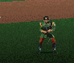

WITCH HAGS, GOBLINS, ROGUES & NAGO
Immunities & Extra Damage
[SPELL HOME]
[ENEMIES]
All Dungeon Enemies are, of course, immune to both Skyfire and Mad God's Rage.
WITCH HAG
MIND MELT
DAMAGE x 2
0
FLAMECAST
IMMUNE
0
SKYFIRE
IMMUNE
0
GOBLIN

MIND MELT
DAMAGE x 2
0
ROGUE / ROGUE MAGE
EVIL SEEK
IMMUNE
0
NAGO
THOUGHTS LIKE CLOUDS
IMMUNE
0
[TOP OF PAGE]